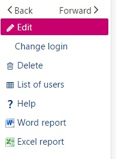

Page
A page manages an activity of the software. It is associated with:
- A representation: A page description associated with an entity managed by the software.
- A facet: A specific entity use case that corresponds to a well defined purpose of a query: are we selecting records, displaying records, modifying records?, and so forth).
| This document describes the organization of a typical page, with the following topics: |
|---|
|
"Query" facet
The "Query" facet is used to list the instances of a class. It is the first facet used when dealing with an entity. For example, before editing the customer data or triggering an operation, it is necessary to identify it in the list of customers.
Another effective way to access a customer record is to use the search.
The query page is organized for a user list as shown on the screen below:

The main elements provided in the query page are the following:
| A grid that lists records from an entity. The available properties have their title present in the upper bar. | |
| Clicking the column name will sort the record in ascending order for the column. If repeated, the sorting order is reverted. An upper or down arrow indicates the column sorting mode.
On the right upper side of the grid, a pagination option can be found:
The total number of records might be displayed if this does not have an impact on performances. The number of lines per page can be changed, and the Previous / Next / First / Last links allow you to go to another page. |
|
Under the title bar, an empty line is usually available to enable selections for the different columns:
|
|
On every line, there is a small icon that provides access to operations linked to the current record. When clicking it, a small menu opens:
|
|
The right bar provides access to global operations:
|
 |
"Details" facet
The "Details" facet displays the details of a record from an entity. It is frequently accessed through a link in a "Query" facet.
The "Details" facet is a page with sections that can be presented in tabs and columns, where you can include grids, picture, and graphical widgets that are described in dedicated pages.
The "Details" facet does not allow data modification, but navigation links can be present as follows:
- On fields that are underlined (usually to the "Details" facet of another entity).
- On arrays, paging links are available when necessary, as well as global links and line links.
The right bar provides access to global operations:
|
"Edit" facet
The "Edit" facet is used to modify the details of a record for an entity. It is frequently accessed through a link in a "Detail" facet or in a "Query" facet. When the "Edit" facet is used, the page is in stateless mode: every modification done on the client is propagated (asynchronously) to the server that can return other information or send back errors.
The "Edit" facet is a page with sections that can be presented in tabs and columns, where you can include grids, pictures, and graphical widgets described in dedicated pages.
The user can click the different fields and modify them, or use the Tab key to go to the next field.
Icons at the field level
Several icons are available at the field level:
* A magnifying glass to open a lookup when a field is a reference to another entity. If you click this icon, you will open a pop-up page that lists the different values with the ability to filter, navigate to the next or previous page, and select the correct record.
* A date picker when a field is a date. A calendar opens to select the correct date.
* A combo chevron when a field is a local menu (enumeration). This allows you to select the right value.
Grid management
For the grids, the following functions are available in Edit mode:
- A title bar with paging information (1).
- Global grid function links such as Add (2) to add lines to the grid. An additional menu can be opened by clicking the corresponding icon(3). This provides access to the personalization mode for grids, and to additional functions if defined.
- Line link functions (5) that include a link to delete a line, insert lines, and any other operation available for the lines.
- A chevron (4) that opens a card view mode for the line. In this mode, the fields included on the line are presented in a page record instead of columns.
This means that:
* To modify a line, the user can click the right field in the right line and modify it.
* To insert a line, the user must click the chevron (5) that appears at the beginning of the line where the insertion will be done, select the Insert link, and enter the data on the line. If the Insert link is not present, the operation is not allowed.
* To append a line after the last line of the grid, use the Add (2) icon.
* To delete a line, the user must click the chevron (5) that appears at the beginning of the line, select the Delete link, and confirm if a question is answered. If the Delete link is not present, the operation is not allowed.
For example, when an array includes a unique column (usually a reference to another table). In this case, the data is presented as a list of small boxes:
- The Append button (1) will add a small text box (2) to enter a new value.
- The Add button with a magnifying glass (3) will open a multiple selection list (lookup) to add several choices on the list.
- The icon in every text box (4) opens a pop-up menu in which the operations related to the line are found (for example, Delete).
- The magnifying glass in the text box (5) is used for a single selection (lookup).
"Lookup" facet
A "Lookup" facet is opened in a pop up window when a selection must be made on a list of references to the entity managed. It is called by clicking the magnifying glass icon associated with the field. Two types of lookup windows can be found:
| The single selection lookup. The window looks exactly like a query page with less columns; filtering and paging is also available (1). Selecting a line will close the pop-up window and returns to the input page. | |
The multiple selection lookup. The only difference with the previous window is the column of check boxes (2):
|
"Summary" facet
The "Summary" facet is used to display a summarized view of a record from an entity. It is frequently accessed from a link on the "Detail" facet.
The "Summary" facet is similar to the "Detail" facet and behaves in the same manner.
Asynchronous operations
An operation launched from a link (usually a link on the right bar) can be executed asynchronously. When this happens, a small window opens on the right side of the page under the upper bar:
In this window:
- The combo box allows choosing the operation to display the progress if several operations are running.
- The lists of tasks can be cleared, or a given task progress information can be cancelled by clicking the trash bin.
- The zebra bar moves when an operation is in progress.
- Additional information can be displayed such as the current phase of a long process, or a percentage of completion.
- When the operation is finished, final messages can be displayed. The style is dependent upon the operation ending successfully, with warnings, or with errors. The details can be displayed by clicking the chevron.
The asynchronous task window can be closed by clicking the upper chevron that is followed by a figure indicating the number of tasks on the list. This indicator remains on the upper bar, and the asynchronous task window can be reopened by clicking the chevron again.